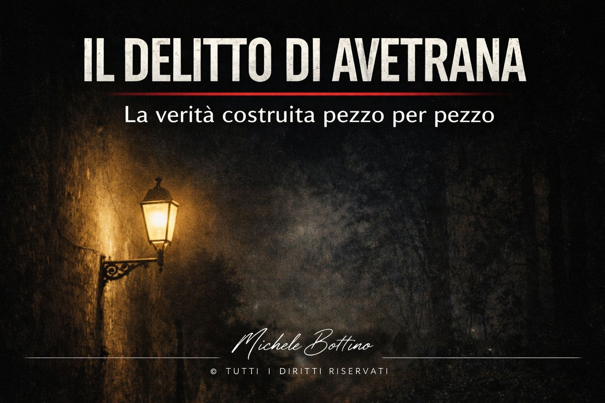

Il 26 agosto 2010, ad Avetrana, una ragazza di quindici anni esce di casa per raggiungere la cugina. Non tornerà più.
Il caso di Sarah Scazzi, negli anni, è diventato uno dei più discussi in Italia. Non solo per la gravità del fatto, ma per la sua struttura: confessioni che cambiano, indizi che sembrano decisivi e poi perdono forza, ricostruzioni che si scontrano tra loro.
Eppure, alla fine, il processo arriva a una conclusione definitiva, confermata dalla Corte di Cassazione nel 2017. Ma quella conclusione non nasce da un unico racconto chiaro. Nasce da un lavoro molto più complesso.
Il primo livello da mantenere distinto è quello stabilizzato dalle sentenze. Sarah Scazzi morì per asfissia meccanica da costrizione; la ricostruzione accolta nel giudicato colloca l’omicidio nell’abitazione dei Misseri e attribuisce la responsabilità a Sabrina Misseri e Cosima Serrano. Michele Misseri è stato invece condannato per la fase successiva di soppressione del cadavere. Questi elementi appartengono al quadro giudiziario definitivo: descriverli come tali non significa sostenere che ogni passaggio della dinamica sia ricostruito con identico grado di dettaglio.
Un secondo livello riguarda le dichiarazioni di Michele Misseri. Nel corso dell’indagine ha fornito versioni incompatibili tra loro, passando dall’autoaccusa all’indicazione di altri soggetti e tornando successivamente ad attribuirsi l’omicidio. Proprio questa instabilità impedisce di trattare una singola versione come chiave autonoma dell’intero caso. Le sentenze hanno valutato le sue dichiarazioni insieme agli altri elementi disponibili, distinguendo ciò che ritenevano riscontrato da ciò che non consideravano attendibile. Le autoaccuse successive al giudicato restano quindi dichiarazioni di Michele Misseri: per modificare una decisione definitiva occorrono gli strumenti e i presupposti previsti dall’ordinamento.
Un altro punto cruciale riguarda il telefono di Sarah. Alle 14:42:48, durante la chiamata effettuata da Sabrina, il cellulare della ragazza agganciò la cella 60241. Nella ricostruzione accolta dai giudici questo dato fu collegato al garage di casa Misseri; nel procedimento venne però discussa anche la possibilità tecnica che la stessa cella potesse essere agganciata dall’interno dell’abitazione. Il dato telefonico, quindi, va conservato insieme al modo in cui è stato valutato e alle contestazioni tecniche emerse: non consente, isolatamente, di ricostruire l’intera dinamica.
Anche la cronologia richiede la stessa precisione. Alle 15:08:26 Michele Misseri telefonò al fratello Carmine da un'area coperta dalla cella che comprendeva la zona del pozzo-cisterna dove il corpo sarebbe stato ritrovato. Il collegamento di quella chiamata con la fase di occultamento appartiene al ragionamento probatorio sviluppato negli atti, non al solo dato telefonico. La sequenza temporale contiene quindi punti documentati e inferenze giudiziarie che devono restare distinguibili, pur facendo parte della medesima ricostruzione definitiva.
La ricostruzione definitiva non dipende quindi da una confessione o da un singolo dato tecnico considerato isolatamente. È il risultato della valutazione giudiziaria di dichiarazioni, riscontri, cronologia e compatibilità reciproca degli elementi acquisiti. Alcuni passaggi restano più dettagliati di altri, ma questa incompletezza descrittiva non equivale, da sola, all’assenza di un accertamento definitivo delle responsabilità.
Nella mia lettura, Avetrana mostra soprattutto perché occorre distinguere tra stabilità del giudicato e completezza narrativa. Il processo ha prodotto una decisione definitiva; ciò non obbliga a presentare ogni minuto della vicenda come perfettamente ricostruito, né autorizza a trattare ogni versione successiva come equivalente alle conclusioni raggiunte nelle sentenze. Il compito dell’analisi è conservare entrambe le informazioni: ciò che è stato giudiziariamente stabilito e ciò che, pur dentro quel quadro, rimane meno definito.

Il delitto di Avetrana
La verità costruita pezzo per pezzo
Classificazione: Caso reale / Analisi documentaria
Stato del caso: Chiuso sul piano giudiziario
Stato dell’evidenza: Giudicato definitivo; ricostruzione processuale stabilizzata, a fronte di dichiarazioni successive che non ne hanno modificato gli effetti
Metodo applicato: Bottino Method · MRN v1.2 – Metodo delle Rotture Narrative
Tag: Avetrana, Sarah Scazzi, Sabrina Misseri, Cosima Serrano, Michele Misseri, cronaca giudiziaria, analisi documentaria
Aggiornamento al 5 ottobre 2026: Il giudicato resta invariato: la Cassazione ha reso definitive nel 2017 le condanne all'ergastolo di Sabrina Misseri e Cosima Serrano. Nel novembre 2024 la Corte europea dei diritti dell'uomo ha dichiarato inammissibile il loro ricorso. Michele Misseri è libero dal febbraio 2024 dopo avere espiato la pena inflittagli per soppressione del cadavere e inquinamento delle prove e continua pubblicamente ad attribuirsi l'omicidio. Nel 2025 i difensori delle due condannate hanno annunciato iniziative orientate a una possibile revisione, compresa la richiesta di nuovi accertamenti; tali iniziative non hanno modificato il giudicato.
Come leggo questo caso: tengo separato ciò che le sentenze definitive hanno stabilito dalle versioni contraddittorie emerse nel tempo. Le dichiarazioni successive non riaprono automaticamente il processo e non acquistano maggiore forza soltanto perché riportano il caso nell’attenzione pubblica.
Anche i singoli indizi vanno mantenuti nel loro contesto: un dato tecnico, una telefonata o una dichiarazione possono concorrere alla ricostruzione giudiziaria senza diventare, isolatamente, la prova decisiva dell’intero caso.